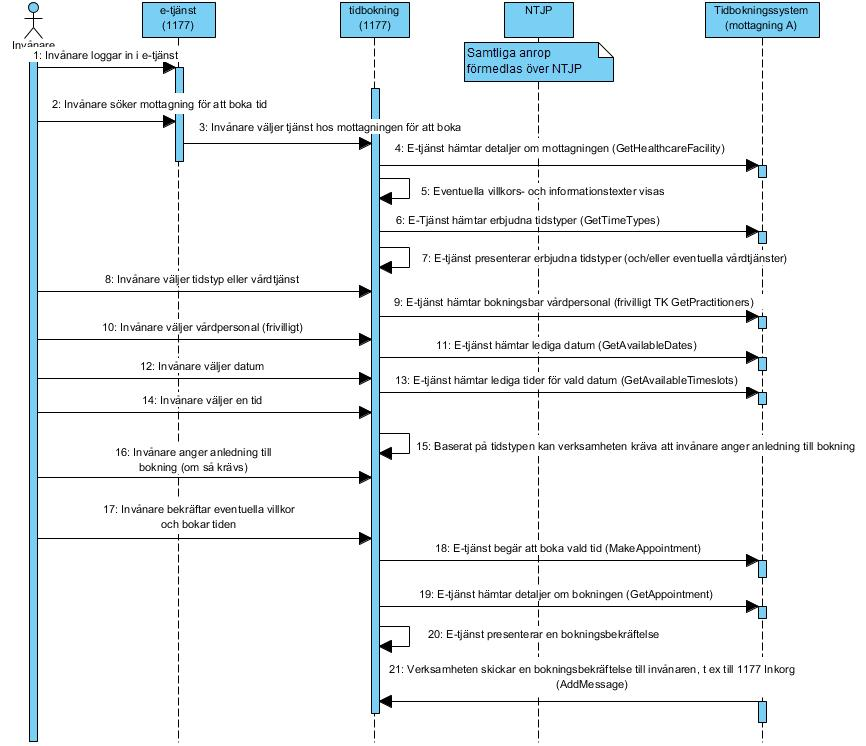
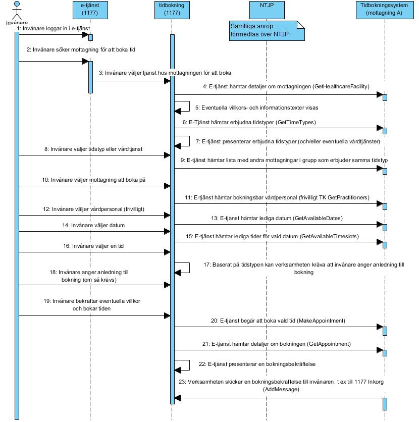
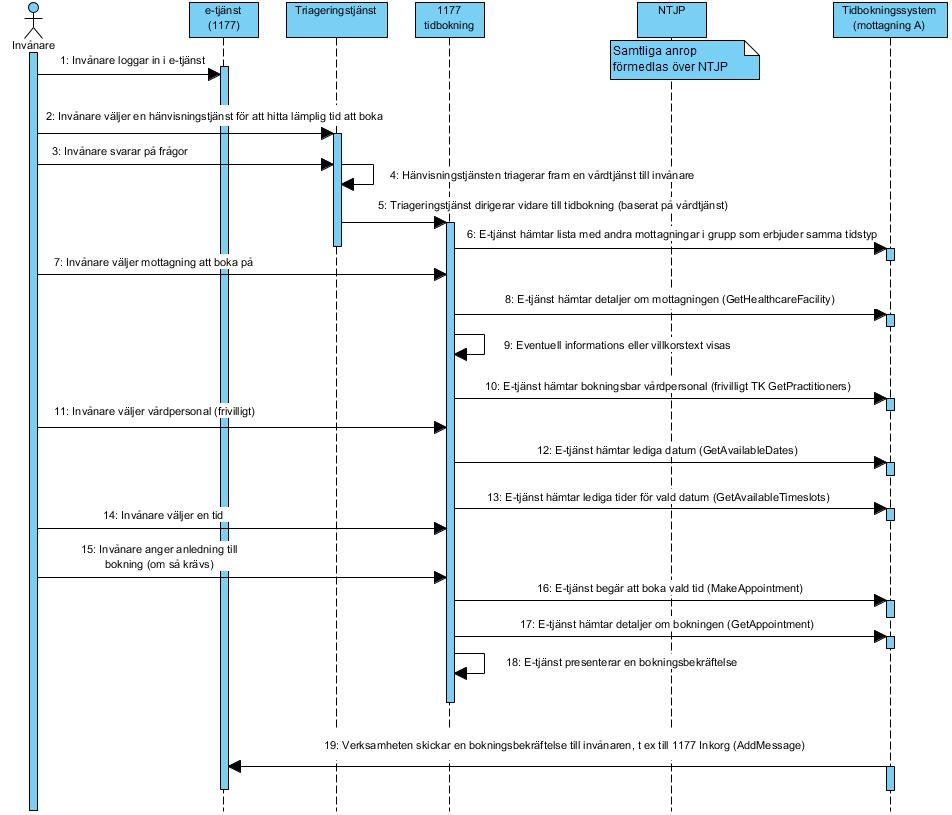
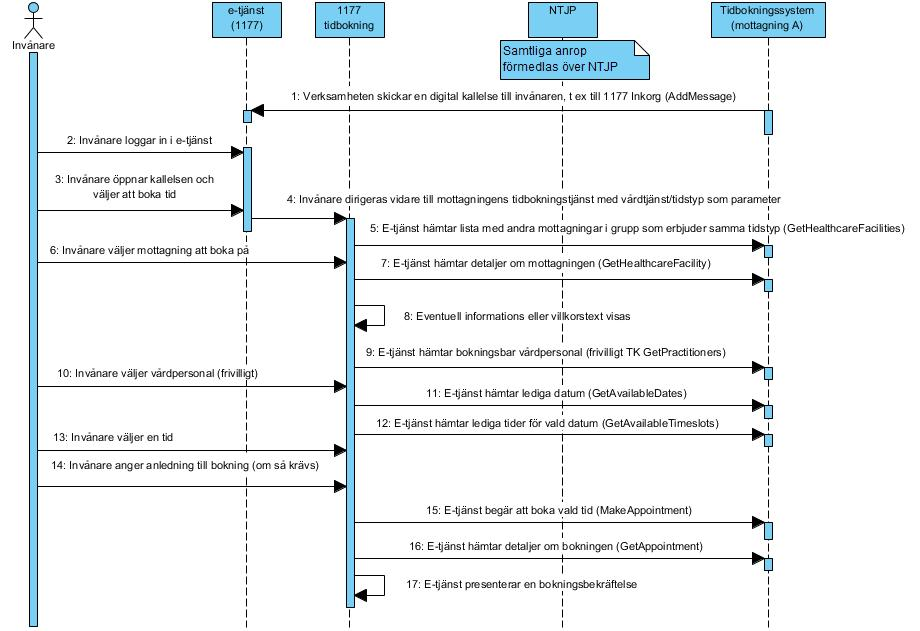
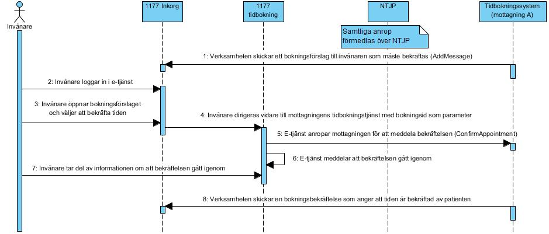
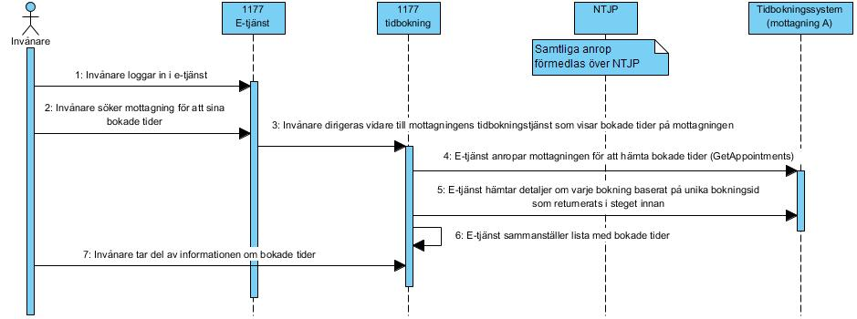
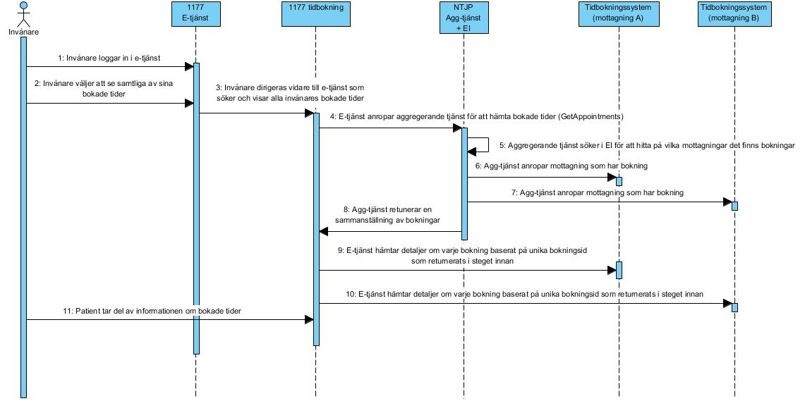
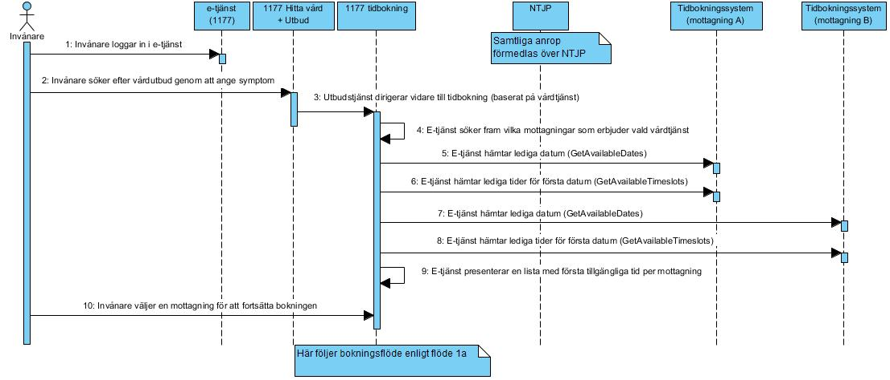
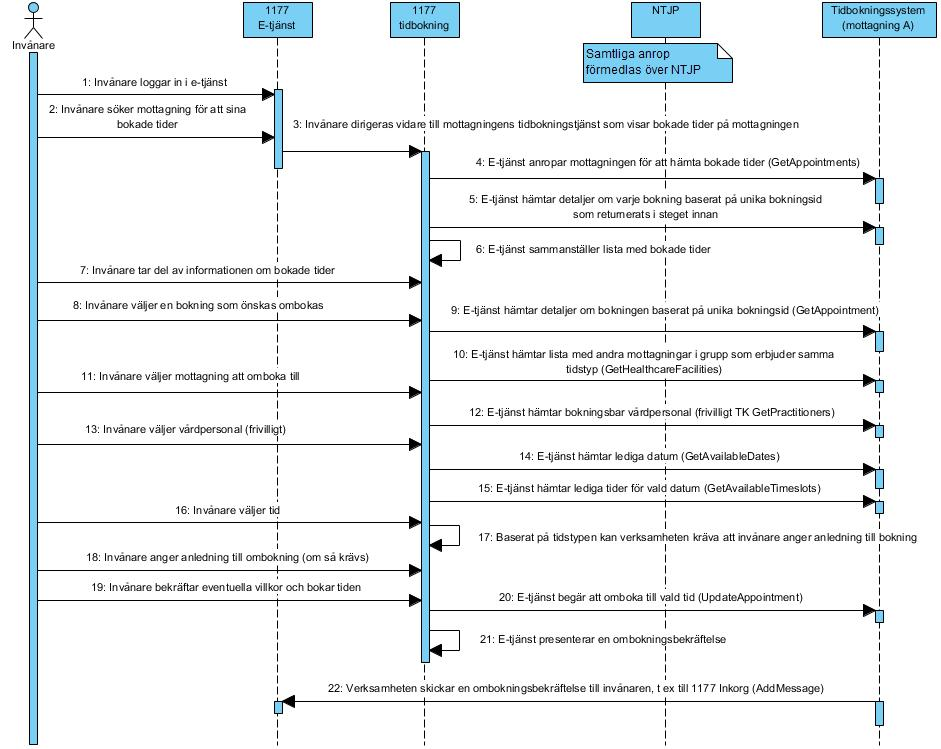
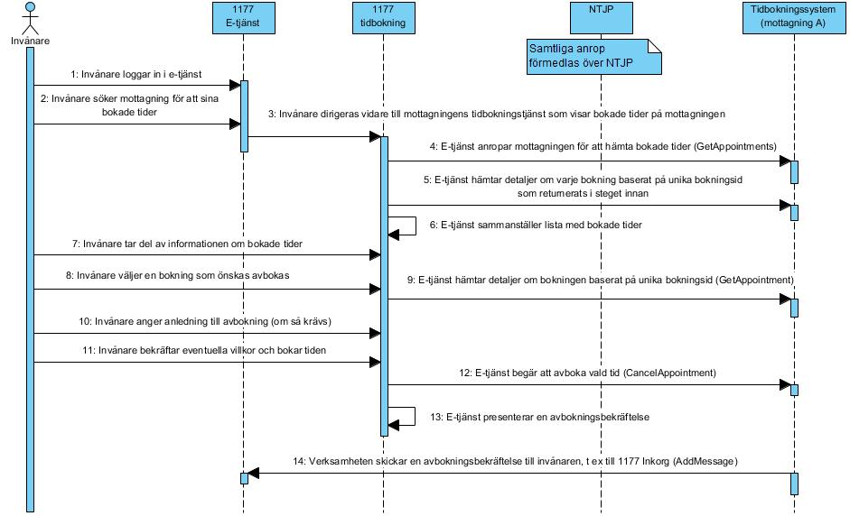

supportprocess: logistics: scheduling
2.0.0-rc1 - RC
supportprocess: logistics: scheduling - Local Development build (v2.0.0-rc1) built by the FHIR (HL7® FHIR® Standard) Build Tools. See the Directory of published versions
Källa: Tjänstekontraktsbeskrivning Tidbokning, version 2.0 RC2 (2023-11-01), TKB_supportprocess_logistics_scheduling.docx.
I detta avsnitt beskrivs hur T-boken tillämpats i tjänstedomänen. Avsnittet syftar till att ge läsaren överblick och förståelse. Avsnittet innehåller inga regler, men ger ett sammanhang för de regler som beskrivs i övriga delar av dokumentet.
Kapitlet beskriver de flöden som är relevanta för tjänstedomänen. Beskrivningarna är i form av flödesmodeller, för varje flöde finns dels ett arbetsflöde som beskriver vilka steg som ingår i flödet, dels ett sekvensdiagram som tar hänsyn till vilka tjänstekontrakt som nyttjas i de olika stegen.
En tjänsteproducent måste minst stödja kontrakten GetAppointments och GetAppointment. Övriga av tjänstedomänens tjänstekontrakt är frivilliga att stödja för tjänsteproducent. Tjänsteproducent ska åtminstone kunna returnera invånares bokade tider på vårdenheten/vårdcentralen. Som en följd av detta måste tjänsteproducent samtidigt också uppdatera engagemangsindex med indexposter som motsvarar bokningarna. Se referens [R2] - Tjänstedomän Engagemangsindex för vidare detaljer kring tjänstekontraktet Update, likaså denna tjänstedomäns specifika regler som gäller utöver tjänstedomänen för engagemangsindex (kap i detta dokument: Anvisningar för uppdatering av Engagemangsindex).
En tjänstekonsument kan välja att stödja ett eller flera av tjänstedomänens flöden enligt nedan. Då flera av tjänstekontrakten som innefattas i respektive flöde är frivilliga för tjänsteproducent behöver tjänstekonsument ta hänsyn till det faktum att en adresserad vårdenhet/vårdcentral (logisk adress) saknar stöd för tilltänkt tjänstekontrakt. Tjänstekonsumenten behöver därmed säkerställa detta genom att exempelvis kunna hantera felkod/returkod genererad av tjänsteplattform eller på förhand säkerställa att adresserad logisk adress finns i tjänsteadresseringskatalogen (TAK). Detta kan exempelvis implementeras via tjänstekontraktet GetSupportedServiceContract (se ref [R3] - Tjänstedomän Tjänsteadressering) eller genom tjänstekonsumentens egen lokala konfiguration.
Flödena beskriver interaktionerna mellan e-tjänst för tidbokning (tjänstekonsument) och en verksamhets tidbokningssystem (tjänsteproducent).
Följande flöden är definierade i domänen:
Flöde 1 – Boka tid direkt på vårdcentral
1a – Boka tid direkt på vårdcentral
1b – Boka tid direkt på virtuell vårdcentral
Flöde 2 – Boka tid med ett kvalificerande försteg (triagering)
Flöde 3 – Boka tid via en digital kallelse
Flöde 4 – Bekräfta en av verksamheten bokad tid
Flöde 5 – Se bokade tider vid en vårdenhet
Flöde 6 – Se bokade tider - nationell kalender
Flöde 7 – Hitta lediga tider baserat på vald vårdtjänst
Flöde 8 – Omboka tid
Flöde 9 – Avboka tid
Följande tabell specificerar vilka kontrakt som är obligatoriska att realisera i respektive flöde:
X= Tjänstekontraktet används i flödet, (X) = Tjänstekontraktet är frivilligt i flödet, ((X)) = Tjänstekontraktet används indirekt i flödet, då flödet kan relatera till annat flöde
| Tjänstekontrakt | 1a | 1b | 2 | 3 | 4 | 5 | 6 | 7 | 8 | 9 |
|---|---|---|---|---|---|---|---|---|---|---|
| CancelAppointment | ((X)) | ((X)) | X | |||||||
| ConfirmBooking | X | |||||||||
| GetHealthcareFacility | X | X | X | X | X | X | ||||
| GetHealthcareFacilities | ((X)) | ((X)) | (X) | |||||||
| GetPractitioners | (X) | (X) | (X) | (X) | ((X)) | (X) | ||||
| GetTimeTypes | X | X | X | X | X | |||||
| GetAvailableDates | X | X | X | X | ((X)) | ((X)) | X | X | ||
| GetAvailableTimeslots | X | X | X | X | ((X)) | ((X)) | X | X | ||
| GetAppointment | X | X | X | X | X | |||||
| GetAppointments | (X) | (X) | X | X | ((X)) | ((X)) | ||||
| MakeAppointment | X | X | X | X | ((X)) | |||||
| UpdateAppointment | ((X)) | ((X)) | X |
Flödet beskriver hur invånare bokar tid på en utvald vårdcentral. Flödet utgår från att invånaren i förväg vet vilken vårdcentral som invånaren vill boka tid på.
| Förutsättningar |
|---|
| Vårdcentralen erbjuder invånare möjlighet att utan förkrav boka ny tid, exempelvis utan att ha kallat invånare / Vårdcentralen ingår inte som en del av en grupp vårdcentraler, eller är en virtuell vårdcentral för flera fysiska vårdcentraler (m a o exponerar inte tjänstekontraktet GetHealthcareFacilities) |
Nedanstående diagram beskriver vilka tjänstekontrakt som används i det ovan beskrivna flödet.

| Namn | Beskrivning |
|---|---|
| Invånare | Person i behov av att en boka tid. |
| Tidbokningssystem | Regionens verksamhetssystem som administrerar tidbokning, resursplanering av personal och resurser mm |
| E-tjänst/tidbokningstjänst | Digital tjänst som möjliggör tidbokning för invånare |
| Steg | Beskrivning |
|---|---|
| 1 | Invånare loggar in i e-tjänst via stark autentisering, exempelvis via mobilt bankId i 1177 e-tjänster. |
| 2 | Invånare söker fram önskad vårdcentral för att boka tid |
| 3 | Invånare väljer tjänst som erbjuder nybokning hos vårdcentralen |
| 4 | E-tjänst anropar tjänstekontraktet GetHealthcareFacility för att hämta information om vårdcentralen. Svaret innehåller bl a eventuella villkorstexter eller informationstexter som vårdcentralen vill förmedla, sådana villkorstexter och informationstexter som gäller generellt för vårdcentralen, oavsett tidstyp, vårdtjänst eller typ av flöde (nybokning, ombokning eller avbokning). |
| 5 | E-tjänst presenterar villkorstexter och informationstexter till invånaren. Invånaren behöver aktivt bekräfta villkorstexterna (om sådana finns) för att kunna fortsätta i flödet. |
| 6 | E-tjänst hämtar vårdcentralens erbjudna tidstyper. |
| 7 | E-tjänst presenterar tidstyperna som vårdcentralen erbjuder. De tidstyper som vårdcentralen har märkt som gömda (skyddade) visas inte för invånaren. Vårdcentralen kan välja att mappa varje tidstyp mot den/de vårdtjänster som kan erbjudas för tidstypen. E-tjänst presenterar en lista med val. Om tidstyperna inte är mappade mot vårdtjänster erbjuds invånaren att välja bland tidstyperna. Om vårdcentralen har mappat tidstyperna mot vårdtjänster visas lista med vårdtjänster. |
| 8 | Invånare väljer en tidstyp eller vårdtjänst från listan att boka tid för. |
| 9 | Om vårdcentralen erbjuder möjlighet att också boka/välja vårdpersonal i samband med bokningen anropar e-tjänst det frivilliga tjänstekontraktet GetPractitioners. Listan med vårdpersonal visas för invånaren. E-tjänst tillåter även invånare att gå vidare utan att specifikt välja vårdpersonal. |
| 10 | Invånaren väljer vårdpersonal i listan (om vårdcentralen erbjuder valmöjligheten) |
| 11 | E-tjänst hämtar lediga datum baserat på vald tidstyp, vårdtjänst och vårdpersonal. |
| 12 | Invånare väljer datum för att se lediga tider |
| 13 | E-tjänst hämtar lediga tider för valt datum, samt för vald typ av tid (tidstyp), vårdtjänst och vårdpersonal. |
| 14 | Invånare väljer en tid att boka |
| 15 | Baserat på tidstypens inställning (inställning som hämtats tillsammans med tidstypen) kan verksamheten kräva att invånaren anger en anledning till bokningen. Verksamheten kan välja att kräva att invånaren anger anledning eller att invånaren frivilligt anger anledning eller att invånaren inte får ange anledning (då visas inte möjlighet för invånaren att ange en anledning) |
| 16 | Invånaren anger en anledning till bokningen (baserat på tidstypens inställning enligt föregående steg) |
| 17 | Invånaren bekräftar eventuella villkor och bokar tiden |
| 18 | E-tjänst begär att boka vald tid genom att anropa tjänstekontraktet MakeAppointment. |
| 19 | Om bokningen lyckas, anropar e-tjänsten tjänstekontraktet GetAppointment för att hämta detaljer om bokningen. Verksamheten kan ha valt att komplettera bokningen med ytterligare detaljer, t ex en unik länk till ett videobesök i fall att kontaktsättet är videobesök. |
| 20 | E-tjänst presenterar en bokningsbekräftelse med detaljerna som hämtats. |
| 21 | Verksamheten skickar en bokningsbekräftelse till invånaren, t ex till 1177 Inkorgen. Verksamheten kan i bokningsbekräftelsen också samtidigt erbjuda möjlighet till avbokning eller ombokning. |
Flödet beskriver hur invånare bokar tid på en utvald vårdcentral. Flödet utgår från att invånaren i förväg vet vilken vårdcentral som invånaren vill boka tid på. Verksamheten har i förväg grupperat sina vårdcentraler som erbjuder samma typ av tider, där denna vårdcentral ingår i gruppen. Invånaren tillåts därmed i flödet att även välja en annan vårdcentral inom gruppen.
Ett exempel på en sådan verksamhetsmässig uppdelning kan vara då verksamheten väljer att i e-tjänst till invånare publicera en virtuell vårdcentral som i sin tur innefattar flera olika fysiska vårdcentraler, på olika platser.
| Förutsättningar |
|---|
| Vårdcentralen erbjuder invånare möjlighet att utan för-krav boka ny tid, exempelvis att ha kallat invånare / Vårdcentralen ingår som en del av en grupp vårdcentraler, eller är en virtuell vårdcentral för flera fysiska vårdcentraler (m a o stödjer tjänstekontraktet GetHealthcareFacilities) |
Nedanstående diagram beskriver vilka tjänstekontrakt som används i det ovan beskrivna flödet.

| Namn | Beskrivning |
|---|---|
| Invånare | Person i behov av att en boka tid. |
| Tidbokningssystem | Regionens verksamhetssystem som administrerar tidbokning, resursplanering av personal och resurser mm |
| E-tjänst/tidbokningstjänst | Digital tjänst som möjliggör tidbokning för invånare |
| Steg | Beskrivning |
|---|---|
| 1 | Invånare loggar in i e-tjänst via stark autentisering, exempelvis via mobilt bankId i 1177 e-tjänster. |
| 2 | Invånare söker fram önskad vårdcentral för att boka tid |
| 3 | Invånare väljer tjänst som erbjuder nybokning hos vårdcentralen |
| 4 | Tidbokningstjänst anropar tjänstekontraktet GetHealthcareFacility för att hämta information om vårdcentralen. Svaret innehåller bl a eventuella villkorstexter eller informationstexter som vårdcentralen vill förmedla, sådana villkorstexter och informationstexter som gäller generellt för vårdcentralen, oavsett tidstyp eller vårdtjänst. |
| 5 | E-tjänst presenterar villkorstexter och informationstexter till invånaren. Invånaren behöver aktivt bekräfta villkorstexterna (om sådana finns) för att kunna fortsätta i flödet. |
| 6 | E-tjänst hämtar vårdcentralens erbjudna tidstyper. |
| 7 | E-tjänst presenterar tidstyperna som vårdcentralen erbjuder. De tidstyper som vårdcentralen har märkt som gömda visas inte för invånaren. Vårdcentralen kan välja att mappa varje tidstyp mot den/de vårdtjänster som kan erbjudas för tidstypen. E-tjänst presenterar en lista med val. Om tidstyperna inte är mappade mot vårdtjänster erbjuds invånaren att välja bland tidstyperna. Om vårdcentralen har mappat tidstyperna mot vårdtjänster visas lista med vårdtjänster. |
| 8 | Invånare väljer en tidstyp eller vårdtjänst från listan att boka tid för |
| 9 | E-tjänst hämtar lista med andra vårdcentraler som ingår i grupp med vald vårdcentral. E-tjänst skickar med tidigare vald tidstyp, så att tidbokningssystemet kan returnera vårdcentraler i gruppen som också erbjuder samma tidstyp |
| 10 | Invånare väljer en annan vårdcentral från listan eller låter ursprungsvårdcentralen vara valet att gå vidare med |
| 11 | Om vårdcentralen erbjuder möjlighet att boka vårdpersonal i samband med bokningen anropar e-tjänst det frivilliga tjänstekontraktet GetPractitioners. Listan med vårdpersonal visas för invånaren. E-tjänst tillåter även invånare att gå vidare utan att välja vårdpersonal. |
| 12 | Invånaren väljer vårdpersonal i listan (om vårdcentralen erbjuder valmöjligheten) |
| 13 | E-tjänst hämtar lediga datum baserat på vald tidstyp, vårdtjänst och vårdpersonal. |
| 14 | Invånare väljer datum för att se lediga tider |
| 15 | E-tjänst hämtar lediga tider för valt datum, samt för vald tidstyp, vårdtjänst och vårdpersonal. |
| 16 | Invånare väljer en tid att boka |
| 17 | Baserat på tidstypens inställning (inställning som hämtats tillsammans med tidstypen) kan verksamheten kräva att invånaren anger en anledning till bokningen. Verksamheten kan välja att kräva att invånaren anger något eller att invånaren frivilligt anger något eller att invånaren inte får ange något (då visas inte något till invånaren) |
| 18 | Invånaren anger en anledning till bokningen (baserat på tidstypens inställning enligt föregående steg) |
| 19 | Invånaren bekräftar eventuella villkor och bokar tiden |
| 20 | E-tjänst begär att boka vald tid genom att anropa tjänstekontraktet MakeAppointment. |
| 21 | Om bokningen lyckas anropar e-tjänst tjänstekontraktet GetAppointment för att hämta detaljer om bokningen. Verksamheten kan ha valt att komplettera bokningen med ytterligare detaljer, t ex en unik länk till ett videobesök i fall att kontaktsättet är videobesök. |
| 22 | E-tjänst presenterar en bokningsbekräftelse med detaljerna som hämtats |
| 23 | Verksamheten skickar en bokningsbekräftelse till invånaren, t ex till 1177 Inkorgen. Verksamheten kan i bokningsbekräftelsen också samtidigt erbjuda möjlighet till avbokning eller ombokning. |
Flödet utgår från att invånaren i förväg vet vilken vårdcentral som invånaren vill boka tid på. Vårdcentralen erbjuder olika typer av tider men kräver att invånare genomgår en triagering. Baserat på utfallet hänvisas invånaren till en specifik typ av tid.
| Förutsättningar |
|---|
| Vårdcentralen erbjuder invånare möjlighet att utan förkrav boka ny tid, exempelvis att ha kallat invånare / Vårdcentralen erbjuder tidbokning men först efter att invånaren blivit kvalificerad till specifik typ av tid. Exempel på ett sådant försteg kan vara ett frågebatteri som invånaren först måste besvara. Baserat på invånarens svar hänvisas invånaren att boka tid av framräknad typ av tid. |
Nedanstående diagram beskriver vilka tjänstekontrakt som används i det ovan beskrivna flödet.

| Namn | Beskrivning |
|---|---|
| Invånare | Person i behov av att en boka tid. |
| Tidbokningssystem | Regionens verksamhetssystem som administrerar tidbokning, resursplanering av personal och resurser mm |
| E-tjänst/tidbokningstjänst | Digital tjänst som möjliggör tidbokning för invånare |
| Steg | Beskrivning |
|---|---|
| 1 | Invånare loggar in i e-tjänst via stark autentisering, exempelvis via mobilt bankId i 1177 Vårdguidens e-tjänster. Invånare söker fram önskad vårdcentral för att boka tid |
| 2 | Invånare väljer vårdcentral att boka tid hos. Vårdcentralen kan exempelvis vara den vårdcentral invånaren har som sitt vårdval eller vårdcentral som invånaren på annat sätt sökt fram i 1177. |
| 3 | Vårdcentralen erbjuder inte sin tidbokningstjänst direkt till invånaren utan har i stället valt att låta invånaren svara på ett par frågor, för att därigenom hänvisa invånaren till rätt typ av tid |
| 4 | Hänvisningstjänst beräknar fram en typ av tid eller vårdtjänst baserat på invånarens svar |
| 5 | Hänvisningstjänst dirigerar vidare invånaren till vårdcentralens tidbokningstjänst och med typ av tid eller vårdtjänst som parameter |
| 6 | E-tjänst hämtar lista med andra vårdcentraler som ingår i grupp med vald vårdcentral. E-tjänst skickar med tidigare vald tidstyp, så att tidbokningssystemet kan returnera vårdcentraler i gruppen som också erbjuder samma tidstyp |
| 7 | Invånare väljer en annan vårdcentral från listan eller låter ursprungsvårdcentralen vara valet att gå vidare med |
| 8 | Tidbokningstjänst anropar tjänstekontraktet GetHealthcareFacility för att hämta information om vårdcentralen. Svaret innehåller bl a eventuella villkorstexter eller informationstexter som vårdcentralen vill förmedla, sådana villkorstexter och informationstexter som gäller generellt för vårdcentralen, oavsett tidstyp eller vårdtjänst. |
| 9 | Tidbokningstjänst presenterar villkorstexter och informationstexter till invånaren. Invånaren behöver bekräfta villkorstexterna. |
| 10 | Om vårdcentralen erbjuder möjlighet att boka vårdpersonal i samband med bokningen anropar e-tjänst det frivilliga tjänstekontraktet GetPractitioners. Listan med vårdpersonal visas för invånaren. E-tjänst tillåter även invånare att gå vidare utan att välja vårdpersonal. |
| 11 | Invånaren väljer vårdpersonal i listan (om vårdcentralen erbjuder valmöjligheten) |
| 12 | E-tjänst hämtar lediga datum baserat på aktuell tidstyp, vårdtjänst och vårdpersonal. |
| 13 | Invånare väljer datum för att se lediga tider |
| 14 | E-tjänst hämtar lediga tider för valt datum, samt för vald tidstyp, vårdtjänst och vårdpersonal (via tjänstekontraktet GetAvailableTimeslots). |
| 15 | Invånare väljer en tid att boka |
| 16 | Baserat på tidstypens inställning (inställning som hämtats tillsammans med tidstypen) kan verksamheten kräva att invånaren anger en anledning till bokningen. Verksamheten kan välja att kräva att invånaren anger något eller att invånaren frivilligt anger något eller att invånaren inte får ange något (då visas inte något till invånaren) / Invånaren anger en anledning till bokningen (baserat på tidstypens inställning enligt föregående steg) / Invånaren bekräftar eventuella villkor och bokar tiden |
| 17 | E-tjänst begär att boka vald tid genom att anropa tjänstekontraktet MakeAppointment. |
| 18 | Om bokningen lyckas anropar tidbokningstjänst tjänstekontraktet GetAppointment för att hämta detaljer om bokningen. Verksamheten kan ha valt att komplettera bokningen med ytterligare detaljer, t ex en unik länk till ett videobesök i fall att kontaktsättet är videobesök. |
| 19 | E-tjänst presenterar en bokningsbekräftelse med detaljerna som hämtats |
| 20 | Verksamheten skickar en bokningsbekräftelse till invånaren, t ex till 1177 Inkorgen. Verksamheten kan i bokningsbekräftelsen också samtidigt erbjuda möjlighet till avbokning eller ombokning. |
Flödet utgår från att vårdcentralen skickar en digital kallelse till invånaren, där invånaren erbjuds att boka en tid hos vårdcentralen. Kallelsen är öppen, d v s ger invånaren möjlighet att själv söka fram bäst passande tid för besöket. Kallelsen är definierad för en specifik typ av tid.
| Förutsättningar |
|---|
| Vårdcentralen erbjuder invånare möjlighet att utan förkrav boka ny tid, exempelvis att ha kallat invånare / Vårdcentralen skickar en digital kallelse till invånaren med erbjudande att själv boka en tid för en specifik typ av tid |
Nedanstående diagram beskriver vilka tjänstekontrakt som används i det ovan beskrivna flödet.

| Namn | Beskrivning |
|---|---|
| Invånare | Person i behov av att en boka tid. |
| Tidbokningssystem | Regionens verksamhetssystem som administrerar tidbokning, resursplanering av personal och resurser mm |
| E-tjänst/tidbokningstjänst | Digital tjänst som möjliggör tidbokning för invånare |
| Steg | Beskrivning |
|---|---|
| 1 | Verksamheten skickar en digital kallelse till invånaren, t ex till 1177 Inkorg, via tjänstekontrakt AddMessage (i tjänstedomänen infrastructure:eservicesupply:patientportal). Om invånaren aktiverat avisering via 1177 skickas ett SMS eller email till invånaren (beroende på invånarens inställning) |
| 2 | Invånare loggar in i e-tjänst via stark autentisering, exempelvis via mobilt bankId i 1177 e-tjänster. |
| 3 | Invånare öppnar sitt nya meddelande som innehåller kallelsen. |
| 4 | Invånare klickar på valet att boka tid och dirigeras vidare till vårdcentralens tidbokningstjänst. Kallelsen är definierad för den vårdtjänst eller tidstyp som verksamheten bestämt. Vårdtjänsten/tidstypen skickas med som parameter. |
| 5 | E-tjänst hämtar lista med andra vårdcentraler som ingår i grupp med vald vårdcentral. E-tjänst skickar med tidigare vald tidstyp, så att tidbokningssystemet kan returnera vårdcentraler i gruppen som också erbjuder samma tidstyp (anropar tjänstekontraktet GetHealthcareFacilities) |
| 6 | Invånare väljer en annan vårdcentral från listan eller låter ursprungsvårdcentralen vara valet att gå vidare med |
| 7 | Tidbokningstjänst anropar tjänstekontraktet GetHealthcareFacility för att hämta information om vårdcentralen. Svaret innehåller bl a eventuella villkorstexter eller informationstexter som vårdcentralen vill förmedla, sådana villkorstexter och informationstexter som gäller generellt för vårdcentralen, oavsett tidstyp eller vårdtjänst. |
| 8 | Tidbokningstjänst presenterar villkorstexter och informationstexter till invånaren. Invånaren behöver bekräfta villkorstexterna. |
| 9 | Om vårdcentralen erbjuder möjlighet att boka vårdpersonal i samband med bokningen anropar e-tjänst det frivilliga tjänstekontraktet GetPractitioners. Listan med vårdpersonal visas för invånaren. E-tjänst tillåter även invånare att gå vidare utan att välja vårdpersonal. |
| 10 | Invånaren väljer vårdpersonal i listan (om vårdcentralen erbjuder valmöjligheten) |
| 11 | E-tjänst hämtar lediga datum baserat på vald tidstyp, vårdtjänst och vårdpersonal. |
| 12 | Invånare väljer datum för att se lediga tider |
| 13 | E-tjänst hämtar lediga tider för valt datum, samt för vald tidstyp, vårdtjänst och vårdpersonal. |
| 14 | Invånare väljer en tid att boka |
| 15 | Baserat på tidstypens inställning (inställning som hämtats tillsammans med tidstypen) kan verksamheten kräva att invånaren anger en anledning till bokningen. Verksamheten kan välja att kräva att invånaren anger något eller att invånaren frivilligt anger något eller att invånaren inte får ange något (då visas inte något till invånaren) / Invånaren anger en anledning till bokningen (baserat på tidstypens inställning enligt föregående steg) / Invånaren bekräftar eventuella villkor och bokar tiden |
| 16 | E-tjänst begär att boka vald tid genom att anropa tjänstekontraktet MakeAppointment. |
| 17 | Om bokningen lyckas anropar e-tjänst tjänstekontraktet GetAppointment för att hämta detaljer om bokningen. Verksamheten kan ha valt att komplettera bokningen med ytterligare detaljer, t ex en unik länk till ett videobesök i fall att kontaktsättet är videobesök. |
| 18 | E-tjänst presenterar en bokningsbekräftelse med detaljerna som hämtats |
| 19 | Verksamheten skickar en bokningsbekräftelse till invånaren, t ex till 1177 Inkorgen. Verksamheten kan i bokningsbekräftelsen också samtidigt erbjuda möjlighet till avbokning eller ombokning. |
Flödet utgår från att vårdcentralen bokar en tid åt patienten och därefter kräver att patienten bekräftar bokningen, genom att skicka en digital bokningsbekräftelse till patienten som patient måste bekräfta. Vårdcentralen skulle därmed exempelvis kunna applicera verksamhetsregler där de bokade tider som inte bekräftats inom en viss period innan besöket kan automatiskt avbokas.
| Förutsättningar |
|---|
| Vårdcentralen har som krav att patient i förväg bekräftar bokad tid för att besöket ska få äga rum |
Nedanstående diagram beskriver vilka tjänstekontrakt som används i det ovan beskrivna flödet.

| Namn | Beskrivning |
|---|---|
| Invånare | Person i behov av att en boka tid. |
| Tidbokningssystem | Regionens verksamhetssystem som administrerar tidbokning, resursplanering av personal och resurser mm |
| E-tjänst/tidbokningstjänst | Digital tjänst som möjliggör tidbokning för invånare |
| Steg | Beskrivning |
|---|---|
| 1 | Verksamheten skickar ett bokningsförslag till invånaren som verksamheten vill att invånaren ska bekräfta, för att bokningen ska genomföras |
| 2 | Invånare loggar in i e-tjänst via stark autentisering, exempelvis via mobilt bankId i 1177 Vårdguidens e-tjänster. Invånare söker fram önskad vårdcentral för att boka tid |
| 3 | Invånare öppnar sitt nya meddelande som innehåller bokningsförslaget. |
| 4 | Invånare klickar på valet att bekräfta tiden och dirigeras vidare till vårdcentralens tidbokningstjänst. Det unika id för bokningsförslaget skickas med som parameter. |
| 5 | Tidbokningstjänst anropar ConfirmAppointment för att bekräfta bokningen |
| 6 | Tidbokningstjänst presenterar ett meddelande för att visa att bekräftelsen är mottagen av verksamheten |
| 7 | Invånare tar del av informationen om att bekräftelsen har mottagits av vårdcentralen |
| 8 | Verksamheten skickar en bokningsbekräftelse till invånaren som visar att tiden nu är bekräftad, t ex till 1177 Inkorgen. Verksamheten kan i bokningsbekräftelsen också samtidigt vidare erbjuda möjlighet till avbokning eller ombokning. |
Flödet beskriver hur patient kan se en sammanställning av sina bokade tider på en vårdcentral. Och utifrån sammanställningen se detaljer om bokningen/bokningarna. Flödet utgår från att patienten i förväg vet vilken vårdcentral som patienten kan ha bokade tider på.
| Förutsättningar |
|---|
| Vårdcentralen erbjuder invånare möjlighet att digitalt att boka ny tid utan att ha kallat invånare / Vårdcentralen skickar en digital kallelse till invånaren med erbjudande att själv boka en tid för en specifik typ av tid |
Nedanstående diagram beskriver vilka tjänstekontrakt som används i det ovan beskrivna flödet.

| Namn | Beskrivning |
|---|---|
| Invånare | Person i behov av att en boka tid. |
| Tidbokningssystem | Regionens verksamhetssystem som administrerar tidbokning, resursplanering av personal och resurser mm |
| E-tjänst/tidbokningstjänst | Digital tjänst som möjliggör tidbokning för invånare |
| Steg | Beskrivning |
|---|---|
| 1 | Invånare loggar in i e-tjänst via stark autentisering, exempelvis via mobilt bankId i 1177 Vårdguidens e-tjänster. Invånare söker fram önskad vårdcentral för att boka tid |
| 2 | Invånare har en snabblänk till sin vårdcentral via sin listning eller genom att invånare söker efter vårdcentralen |
| 3 | Vårdcentralen erbjuder tjänst för invånare att se sina bokade tider på vårdcentralen. Invånare väljer att se sina bokningar. |
| 4 | E-tjänst anropar vårdcentralen för att hämta invånarens bokade tider (GetAppointments). Svaret innehåller en lista med unika bokningsId’n för invånarens samtliga bokningar på vårdcentralen. Varje bokningsId som returneras är kopplad till vårdcentralens HSAId. I detta flöde förväntas listan bara innehålla vald vårdcentrals HSAId |
| 5 | E-tjänst hämtar bokningsdetaljer för varje returnerat bokningsId |
| 6 | E-tjänst sammanställer listan med bokningar och presenterar svaret till invånaren |
| 7 | Invånare tar del av information om samtliga sina bokningar på vårdcentralen. Härifrån kan sedan invånare välja exempelvis att omboka/avboka, alternativt att bekräfta bokningen om bokningen ännu inte är bekräftad. Respektive vägval finns beskrivet i annat flöde. |
Flödet beskriver interaktionerna mellan e-tjänst för tidbokning (tjänstekonsument) och en verksamhets tidbokningssystem (tjänsteproducent). Flödet utgår från att vårdcentralen skickar en kallelse till invånaren, där invånaren erbjuds boka en tid hos vårdcentralen. Kallelsen är öppen, d v s ger invånaren möjlighet att söka fram bäst passande tid för besöket. Kallelsen är för en specifik typ av tid.
| Förutsättningar |
|---|
| Vårdcentralen erbjuder invånare möjlighet att boka ny tid utan att ha kallat invånare / Vårdcentralen skickar en digital kallelse till invånaren med erbjudande att själv boka en tid för en specifik typ av tid |
Nedanstående diagram beskriver vilka tjänstekontrakt som används i det ovan beskrivna flödet.

| Namn | Beskrivning |
|---|---|
| Invånare | Person i behov av att en boka tid. |
| Tidbokningssystem | Regionens verksamhetssystem som administrerar tidbokning, resursplanering av personal och resurser mm |
| E-tjänst/tidbokningstjänst | Digital tjänst som möjliggör tidbokning för invånare |
| Steg | Beskrivning |
|---|---|
| 1 | Invånare loggar in i e-tjänst via stark autentisering, exempelvis via mobilt bankId i 1177 Vårdguidens e-tjänster. |
| 2 | Invånare har en snabblänk till sin vårdcentral via sin listning eller genom att invånare söker efter vårdcentralen |
| 3 | Vårdcentralen erbjuder tjänst för invånare att se sina bokade tider på vårdcentralen. Invånare väljer att se sina bokningar. |
| 4 | E-tjänst adresserar tjänstekontraktet GetAppointments med Ineras organisationsnummer, istället för en direktadressering till vårdcentral, vilket triggar aggregerande tjänst på den Nationella tjänsteplattformen. |
| 5 | Den aggregerande tjänsten söker vidare i engagemangsindex efter patientens samtliga bokningar och var bokningarna finns. Svaret innehåller en lista med unika bokningsId’n för invånarens samtliga bokningar på de vårdcentralerna som bokningarna finns på. Varje bokningsId som returneras är kopplad till vårdcentralens HSAId. |
| 6-7 | Den aggregerande tjänsten anropar vidare varje vårdcentral som har bokning(ar) tillhörande patienten genom tjänstekontraktet GetAppointments. |
| 8 | Den aggregerande tjänsten inväntar alla svar från vårdcentralerna och sammanställer sedan en komplett lista med patientens bokningar. |
| 9-10 | E-tjänst hämtar detaljer om varje bokning i sammanställningen genom att direktadressera vårdcentralen/vårdcentralerna. |
| 11 | Patient tar del av en samlad bild av sina bokningar och kan se detaljerna om dem. |
Flödet beskriver interaktionerna mellan e-tjänst för tidbokning (tjänstekonsument) och en verksamhets tidbokningssystem (tjänsteproducent). Flödet utgår från att vårdcentralen skickar en kallelse till invånaren, där invånaren erbjuds boka en tid hos vårdcentralen. Kallelsen är öppen, d v s ger invånaren möjlighet att söka fram bäst passande tid för besöket. Kallelsen är för en specifik typ av tid.
| Förutsättningar |
|---|
| Vårdcentralen erbjuder invånare möjlighet att boka ny tid utan att ha kallat invånare / Vårdcentralen skickar en digital kallelse till invånaren med erbjudande att själv boka en tid för en specifik typ av tid |
Nedanstående diagram beskriver vilka tjänstekontrakt som används i det ovan beskrivna flödet.

| Namn | Beskrivning |
|---|---|
| Invånare | Person i behov av att en boka tid. |
| Tidbokningssystem | Regionens verksamhetssystem som administrerar tidbokning, resursplanering av personal och resurser mm |
| E-tjänst/tidbokningstjänst | Digital tjänst som möjliggör tidbokning för invånare |
| Steg | Beskrivning |
|---|---|
| 1 | Invånare loggar in i e-tjänst via stark autentisering, exempelvis via mobilt bankId i 1177 Vårdguidens e-tjänster. Invånare söker fram önskad vårdcentral för att boka tid |
| 2 | Invånare söker efter vårdutbud genom att exempelvis beskriva sina symptom. Detta kan exempelvis ske genom att invånare svarar på en rad frågor och att invånare därefter triageras baserat på de angivna svaren |
| 3 | Triageringstjänst dirigerar vidare invånare till tidbokningstjänst och skickar med den vårdtjänst som triageringen resulterat i. Vårdtjänst uttrycks som en SNOMED-CT kod. |
| 4 | Tidbokningstjänst söker fram vilka vårdcentraler som erbjuder utvald vårdtjänst, via exempelvis via utbudstjänst |
| 5 & 7 | Tidbokningstjänst söker efter lediga datum hos de vårdcentraler som erbjuder vårdtjänsten. |
| 6 & 8 | Tidbokningstjänst hämtar lediga tider för det första datum som varje vårdcentral har lediga tider |
| 9 | Tidbokningstjänst presenterar en lista med första lediga tid per vårdcentral |
| 10 | Invånaren väljer en vårdcentral för att fortsätta bokningen. Se flöde 1 för vidare beskrivning om nybokning på vårdcental |
Flödet beskriver interaktionerna mellan e-tjänst för tidbokning (tjänstekonsument) och en verksamhets tidbokningssystem (tjänsteproducent). Flödet utgår från att vårdcentralen erbjuder en e-tjänst till patienten som ger patienten möjlighet att omboka en befintlig bokning.
| Förutsättningar |
|---|
| Vårdcentralen erbjuder invånare möjlighet att omboka en bokad tid / Patienten har en bokning på vårdcentralen / Vårdcentralen tillåter att bokningen får ombokas av patienten |
Nedanstående diagram beskriver vilka tjänstekontrakt som används i det ovan beskrivna flödet.

| Namn | Beskrivning |
|---|---|
| Invånare | Person i behov av att en boka tid. |
| Tidbokningssystem | Regionens verksamhetssystem som administrerar tidbokning, resursplanering av personal och resurser mm |
| E-tjänst/tidbokningstjänst | Digital tjänst som möjliggör tidbokning för invånare |
| Steg | Beskrivning |
|---|---|
| 1 | Invånare loggar in i e-tjänst via stark autentisering, exempelvis via mobilt bankId i 1177 Vårdguidens e-tjänster. Invånare söker fram önskad vårdcentral för att boka tid |
| 2 | Patient söker efter sin vårdcentral för att se vilka bokade tider patient har |
| 3 | Patienten dirigeras till vårdcentralens tidbokningstjänst för att hämta bokade tider |
| 4 | Tidbokningstjänst anropar vårdcentralen (via tjänstekontraktet GetAppointments) för att hämta bokningar på vårdcentralen. En lista med unika bokningsId:n returneras |
| 5 | Tidbokningstjänst hämtar detaljer om varje bokning (baserat på tidigare returnerat bokningsId) |
| 6 | Tidbokningstjänst sammanställer en lista med bokningar |
| 7 | Patient tar del av informationen om sina bokade tider på vårdcentralen |
| 8 | Patient väljer den bokning som patient önskar omboka |
| 9 | Tidbokningstjänst hämtar detaljer om vald bokning. I bokningsdetaljerna ingår även en flagga som verksamheten returnerar och som avgör om bokningen får ombokas av patient (attributet updateAppointmentAllowed i datatypen AppointmentType) |
| 10 | Tidbokningstjänst hämtar lista med andra vårdcentraler som ingår i grupp med vald vårdcentral. E-tjänst skickar med tidigare vald tidstyp, så att tidbokningssystemet kan returnera vårdcentraler i gruppen som också erbjuder samma tidstyp |
| 11 | Invånare väljer en annan vårdcentral från listan eller låter ursprungsvårdcentralen vara valet att gå vidare med. |
| 12 | Om vårdcentralen erbjuder möjlighet att boka vårdpersonal i samband med bokningen anropar e-tjänst det frivilliga tjänstekontraktet GetPractitioners. Listan med vårdpersonal visas för invånaren. E-tjänst tillåter även invånare att gå vidare utan att välja vårdpersonal. |
| 13 | Invånaren väljer vårdpersonal i listan (om vårdcentralen erbjuder valmöjligheten). |
| 14 | E-tjänst hämtar lediga datum baserat på vald tidstyp, vårdtjänst och vårdpersonal. |
| 15 | Invånare väljer datum för att se lediga tider. |
| 16 | Tidbokningstjänst hämtar lediga tider för valt datum, samt för vald typ av tid (tidstyp), vårdtjänst och vårdpersonal. |
| 17 | Invånare väljer en tid att avboka. |
| 18 | Baserat på tidstypens inställning (inställning som hämtats tillsammans med tidstypen) kan verksamheten kräva att invånaren anger en anledning till bokningen. Verksamheten kan välja att kräva att invånaren anger något eller att invånaren frivilligt anger något eller att invånaren inte får ange något (då visas inte något till invånaren). |
| 19 | Invånaren anger en anledning till bokningen (baserat på tidstypens inställning enligt föregående steg). |
| 20 | Invånaren bekräftar eventuella villkor och bokar tiden. |
| 21 | Tidbokningstjänst begär att omboka vald tid genom att anropa tjänstekontraktet UpdateAppointment. |
| 22 | Tidbokningstjänst presenterar en bekräftelse på att ombokningen lyckats. |
| 23 | Verksamheten skickar en digital bekräftelse om ombokningen som dessutom innehåller detaljer om den nya tiden. |
Flödet visar hur invånare ges möjlighet att avboka en befintlig bokning.
| Förutsättningar |
|---|
| Vårdcentralen erbjuder invånare möjlighet att avboka en redan bokad tid |
Nedanstående diagram beskriver vilka tjänstekontrakt som används i det ovan beskrivna flödet.

| Namn | Beskrivning |
|---|---|
| Invånare | Person i behov av att en boka tid. |
| Tidbokningssystem | Regionens verksamhetssystem som administrerar tidbokning, resursplanering av personal och resurser mm |
| E-tjänst/tidbokningstjänst | Digital tjänst som möjliggör tidbokning för invånare |
| Steg | Beskrivning |
|---|---|
| 1 | Patient loggar in i e-tjänst via stark autentisering, exempelvis via mobilt bankId i 1177 Vårdguidens e-tjänster. Patient söker fram önskad vårdcentral för att boka tid |
| 2 | Patient söker efter sin vårdcentral för att se vilka bokade tider patient har |
| 3 | Patienten dirigeras till vårdcentralens tidbokningstjänst för att hämta bokade tider |
| 4 | Tidbokningstjänst anropar vårdcentralen (via tjänstekontraktet GetAppointments) för att hämta bokningar på vårdcentralen. En lista med unika bokningsId:n returneras |
| 5 | Tidbokningstjänst hämtar detaljer om varje bokning (baserat på tidigare returnerat bokningsId) |
| 6 | Tidbokningstjänst sammanställer en lista med bokningar |
| 7 | Patient tar del av informationen om sina bokade tider på vårdcentralen |
| 8 | Patient väljer den bokning som patient önskar avboka |
| 9 | Tidbokningstjänst hämtar detaljer om vald bokning. I bokningsdetaljerna ingår även en flagga som verksamheten returnerar och som avgör om bokningen får avbokas av patient (attributet cancelAppointmentAllowed i datatypen AppointmentType). / Baserat på tidstypens inställning (inställning som hämtats tillsammans med tidstypen) kan verksamheten kräva att invånaren anger en anledning till avbokningen. Verksamheten kan välja att kräva att invånaren anger något eller att invånaren frivilligt anger något eller att invånaren inte får ange något (då visas inte något till invånaren) / Invånaren anger en anledning till avbokningen |
| 10 | Invånaren anger en anledning till bokningen (baserat på tidstypens inställning enligt föregående steg) |
| 11 | Invånaren bekräftar eventuella villkor och bokar tiden |
| 12 | Tidbokningstjänst begär att omboka vald tid genom att anropa tjänstekontraktet CancelAppointment. |
| 13 | Tidbokningstjänst presenterar en bekräftelse på att avbokningen lyckats |
| 14 | Verksamheten skickar en digital bekräftelse om avbokningen som dessutom innehåller detaljer om den nya tiden |
Regler kring adressering styrs av T-Boken och detta avsnitt avser endast att förtydliga skrivningen för dessa regler. Själva reglerna beskrivs i T-Boken kapitel 8.3 (Översikt tekniska anvisningar utgåva C)
Domänen tillämpar verksamhetsadressering där vårdenhetens HSA-id används för adressering och tolkningen av detta HSA-id måste vara skiftlägesokänsligt i såväl konsument som producent.
Det finns utrymme för anrop via en aggregerande tjänst för tjänstekontraktet GetAppointments i denna domän. En aggregerande tjänst har samma tjänstekontrakt och anropsadress som en traditionell virtuell tjänst, men de nås på olika logiska adresser. Om en verksamhets HSA-id anges som logisk adress, kommer frågemeddelandet att dirigeras vidare direkt till källsystemet utan att passera en aggregerande tjänst. Om logisk adress är HSA-id för Inera eller en huvudman, kommer anropet i stället att dirigeras till en aggregerande tjänst som i sin tur, efter att ha konsulterat Engagemangsindex, vidarebefordrar frågan till de källsystem som har information om invånaren.
För användning av en aggregerande tjänst behöver producenter uppdatera Engagemangsindex och den aggregerande tjänsten behöver vara utvecklad inom ramen för en anpassningsplattform.
| Begäran om att hämta invånares/patients bokade tider (GetAppointments) | Logisk adress |
|---|---|
| Nationell sammanfattning av invånares bokade tider | Ineras HSA-id: 5565594230 / Genom att adressera på detta sätt triggas aggregerad tjänst igång på den nationella tjänsteplattformen som i sin tur baserar sina vidare anrop på innehållet i engagemangsindex. |
| Regional sammanfattning av invånares bokade tider | Huvudmannens länskod eller annan identifierare som är TAKad på den nationella tjänsteplattformen. / Genom att adressera på detta sätt dirigeras anropet till annan (regional tjänsteplattform) som i sin tur triggar regional aggregerad tjänst. |
| Invånares bokade tider på en vårdcentral | E-tjänst adresserar specifik vårdcentral direkt. Den logiska adressen motsvarar vårdcentralens HSA-Id |
För tjänstespecifika regler kring aggregerande tjänster, se respektive tjänsteinteraktion.
Anslutna tjänsteproducenter som erbjuder visning, ombokning eller avbokning genom domänens tjänstekontrakt ska uppdatera Engagemangsindex för att informera tjänstekonsumenter om bokningar som finns i tidboken.
Engagemangsindex är en egen tjänstedomän, separat från tidbokningsdomänen, som definierar kontrakt och regler för uppdatering av indexet. För mer information, se tjänstedomänen itintegration:engagementindex på http://www.rivta.se.
Varje tjänstedomän har ansvar att definiera anvisningar och regler för uppdatering och hantering av information inom Engagemangsindex. Detta avsnitt innehåller tjänstedomänen crm:schedulings anvisningar och regler.
Följande regler gäller för innehållet i begäran till tjänstekontraktet Update i Engagemangsindex för uppdateringar som rör denna tjänstedomän (supportprocess:logistics:scheduling). Observera att nedanstående beskrivning endast avser de attribut där tjänstedomänen supportprocess:logistics:scheduling styr reglerna. För en komplett förteckning av attribut och tjänstekontraktsbeskrivning hänvisas till beskrivningen för tjänstedomänen ”itintegration:engagementindex”.
Observera:
I föregående version av tjänstedomänen crm:scheduling (version 1) uttrycktes att attributet mostRecentContent i EI-posten skulle motsvara ”Starttidpunkt för den bokade tiden”. Detta krav är fr o m denna version (2.0) borttaget. Attributet mostRecentContent ska fr o m denna version populeras enligt TKB för Engagemangsindex (itintegration:engagementindex) och motsvara datum och tid för när uppdateringen skett i informationsobjektet, således till den tidpunkten då EI-posten (bokningen) skapas (eller ändras).
| Attribut | Format | Mult | Domänspecifik semantik eller värde | Beslutsregler och kommentar |
|---|---|---|---|---|
| serviceDomain | Text | 1..1 | Värdet ska vara ”riv:supportprocess:logistics:scheduling” | Del av instansens unikhet. |
| categorization | Text bestående av bokstäver i ASCII. | 1..1 | Värdet ska vara ”NA”. / - Ändring fr.o.m. version 1.1.2. | Del av instansens unikhet. |
| logicalAddress | Text, enligt hsaid standard | 1..1 | Vårdcentralens/vård-enhetens HSA-id. Värdet ska vara den logiska adress som ska användas av konsumenter som ska adressera vårdcentralens tidbok genom tjänstekontrakten i denna domän. | Del av instansens unikhet. |
| businessObjectInstanceIdentifier | Text | 1..1 | BookingId för bokningen som denna engagemangsindexpost pekar på eller kallelse. | Del av instansens unikhet. |
Engagemangsindex ska uppdateras när en bokning skapas, ändras, blir inaktuell, eller av annan anledning tas bort i verksamhetens tidbokningssystem. Beroende på förutsättningar och implementation hos producenten så kan en ombokning innebära att befintlig post i Engagemangsindex tas bort och att en ny skapas.
Uppdatering av Engagemangsindex ska göras oavsett om bokningen i verksamhetens tidbokningssystem skapats/ändrats av invånaren via tjänstekontrakt eller av vårdcentralens personal med hjälp av verksamhetens bokningsfunktion (exempelvis via verksamhetssystemets gränssnitt).
Endast bokningar som uppfyller samtliga av följande kriterier ska finnas i Engagemangsindex:
Bokningen ligger framåt i tiden (ska äga rum).
Bokningen är lämplig för e-tjänster att presentera för invånaren. Ett känt exempel på en typ av bokning med koppling till en specifik invånare, men som inte bör presenteras för denne, är en bokning där vårdpersonal avsatt tid för administrativt arbete inom invånarens behandling.
Detaljer om bokningen kan hämtas genom tjänstekontrakten för Tidbokning. Tjänstekonsumenter ska kunna skicka en begäran till tjänstekontraktet GetAppointment för att hämta detaljer om en bokning som skickats till Engagemangsindex. Det leder till att en tidboksproducent behöver logik för att kunna selektera för vilka vårdcentraler som förändringar ska notifieras till Engagemangsindex.
Historiken ska rensas från Engagemangsindex av tjänsteproducenten. Tjänsteproducenten ska rensa information som inte längre är relevant, exempelvis när en bokning är passerad (när besöket ägt rum). Regelverket för när informationen inte är relevant kan skilja sig mellan olika verksamheter och styrs från tjänsteproducenten.
Varje enskild bokning i verksamhetens tidbokningssystem som uppfyller kriterierna i dessa anvisningar ska motsvaras av en post i nationella Engagemangsindex.
En bokning anses ha ändrats när värdet för något av attributen som utgör dess engagemangspost har ändrats. Tabellen nedan redovisar för de attribut* som utgör en engagemangsindexpost.
Observera att det endast är vid ändring av attributet mostRecentContent, d.v.s. vid ombokning, som en befintlig post kan uppdateras. Ändring av övriga attribut innebär att befintlig post i Engagemangsindex måste tas bort och ersättas med en ny eftersom dessa attribut utgör instansens unikhet (engagemangsindexpostens sammansatta nyckel).
| Attribut | Beskrivning | Beslutsregler och kommentar | Hantering |
|---|---|---|---|
| registeredResidentIdentification | Invånarens personnummer. | Del av instansens unikhet. | En ändring av detta värde innebär att posten måste tas bort och ersättas med en ny. |
| serviceDomain | Värdet ska vara ”riv:supportprocess:logistics:scheduling”. | Del av instansens unikhet. | Detta värde kan inte ändras. |
| categorization | Värdet ska vara "NA”. / - Ändring fr.o.m. version 1.1.2. | Del av instansens unikhet. | Detta värde kan inte ändras. |
| logicalAddress | Vårdcentralens/vårdenhetens HSA-id. | Del av instansens unikhet. | En ändring av detta värde innebär att posten måste tas bort och ersättas med en ny. |
| businessObjectInstanceIdentifier | BookingId för bokningen. | Del av instansens unikhet. | En ändring av detta värde innebär att posten måste tas bort och ersättas med en ny. |
| clinicalProcessInterestId | Värdet ska vara "NA”. | Del av instansens unikhet. | Detta värde kan inte ändras. |
| mostRecentContent | Datum och tid för när uppdateringen skett i informationsobjektet, således den tidpunkten då EI-posten (bokningen) skapas (eller ändras). | Ej del av instansens unikhet. | En ändring av detta värde innebär att befintlig post måste uppdateras. |
| sourceSystem | Källsystemet som genererade engagemangsposten. | Del av instansens unikhet. | En ändring av detta värde innebär att posten måste tas bort och ersättas med en ny. |
| dataController | Ett värde som kan användas för att härleda (kan kräva manuella insatser) vem som är personuppgiftsansvarig för posten. | Del av instansens unikhet. | En ändring av detta värde innebär att posten måste tas bort och ersättas med en ny. |
En bokning anses vara inaktuell när den avbokats, dess starttidpunkt passerats (besöket påbörjats). När en bokning blivit inaktuell ska dess post i nationella Engagemangsindex tas bort av tjänsteproducenten.
En befintlig post i Engagemangsindex ska tas bort och ersättas med en ny vid ändring av något av värdena för attributen som ingår i begäran till tjänstekontraktet Update och utgör del postens unikhet. Följande attribut ingår i begäran till tjänsten Update och utgör del av en engagemangsindexposts unikhet:
registeredResidentIdentification
serviceDomain
categorization
logicalAddress
businessObjectInstanceIdentifier
clinicalProcessInterestId
sourceSystem
dataController
Observera att attributet mostRecentContent är det enda attribut som ingår i begäran till tjänsten Update men som inte utgör del av postens unikhet. Det är följaktligen endast vid en ändring av detta värde (ombokning) som en befintlig post kan uppdateras. Vid alla andra typer av ändringar måste den befintliga posten tas bort och ersättas med en ny.
Vid ändring av värdet för attributet mostRecentContent.
Exempel: En bokad tid får en ny starttidpunkt (ombokas) men behåller sitt BookingId. Denna ändring i tidbokningssystemet innebär en ändring av attributet mostRecentContent i engagemangsindexposten. Eftersom inget av de attribut som utgör engagemangsindexpostens unikhet har ändrats ska befintlig post uppdateras (snarare än att tas bort och ersättas med en ny).
Vid ändring av värdet för attributet businessObjectInstanceIdentifier. Aktuellt när en bokad tid får ett nytt BookingId.
Exempel: Tidbokningssystemet skapar ett nytt BookingId för en bokad tid som fått en ny starttidpunkt (ombokats). Eftersom värdet för attributet businessObjectInstanceIdentifier, som är en del av postens unikhet, har ändrats.
Vid ändring av värdet för attributet logicalAddress.
Exempel: En bokad tid bokas om till en annan vårdenhet/vårdcentral. Engagemangsindexposten måste tas bort och ersättas med en ny eftersom värdet för attributet logicalAddress, som är en del av postens unikhet, har ändrats.
Exempel: Vårdenheten/vårdcentralen byter HSA-id. Engagemangsindexposten måste tas bort och ersättas med en ny eftersom värdet för attributet logicalAddress, som är en del av postens unikhet, har ändrats.
Vid ändring av värdet för attributet sourceSystem. Aktuellt om den bokade tiden flyttas till ett nytt källsystem, eller om befintligt källsystem byter HSA-id.
Vid ändring av värdet för attributet registeredResidentIdentification. Aktuellt om invånaren får ett nytt personnummer.
Vid ändring av värdet för attributet dataController. Aktuellt om personuppgiftsansvarig för posten ändras.
Exempel på en befintlig post i Engagemangsindex:
<engagement>
<registeredResidentIdentification>191212121212</registeredResidentIdentification>
<serviceDomain>riv:crm:scheduling</serviceDomain>
<categorization>NA</categorization>
<logicalAddress>SE2321000016-A65H</logicalAddress>
<businessObjectInstanceIdentifier>861245</businessObjectInstanceIdentifier>
<clinicalProcessInterestId>NA</clinicalProcessInterestId>
<mostRecentContent>20160613140000</mostRecentContent>
<sourceSystem>SE2321000016-84GX</sourceSystem>
<dataController>SE232100-0016</dataController>
</engagement>
Attributen creationTime, updateTime och owner tas inte upp för posten i exemplet ovan eftersom värden för dessa attribut sätts av Engagemangsindex-implementationen.
Begäran till tjänsten Update för att ta bort posten ovan
En post i Engagemangsindex tas bort via begäran till tjänsten Update med den befintliga postens sammansatta nyckel och attributet deleteFlag satt till "true".
<urn1:Update>
<urn1:engagementTransaction>
<urn2:deleteFlag>true</urn2:deleteFlag>
<urn2:engagement>
<urn2:registeredResidentIdentification>191212121212</urn2:registeredResidentIdentification>
<urn2:serviceDomain>riv:crm:scheduling</urn2:serviceDomain>
<urn2:categorization>NA</urn2:categorization>
<urn2:logicalAddress>SE2321000016-A65H</urn2:logicalAddress>
<urn2:businessObjectInstanceIdentifier>861245</urn2:businessObjectInstanceIdentifier>
<urn2:clinicalProcessInterestId>NA</urn2:clinicalProcessInterestId>
<urn2:sourceSystem>SE2321000016-84GX</urn2:sourceSystem>
<urn2:dataController>SE232100-0016</urn2:dataController>
</urn2:engagement>
</urn1:engagementTransaction>
</urn1:Update>
Observera att attributet/elementet mostRecentContent inte ska uppges i begäran vid borttag av poster. D.v.s. när deleteFlag är satt till "true".
Engagemangsindex behöver inte grundladdas med engagemang inom tjänstedomänen supportprocess:logistics:scheduling.
Alla tjänsteinteraktioner i domänen har ett obligatoriskt attribut för att från tjänstekonsumenten ange aktör (Actor). En aktör kan vara invånaren själv, vårdnadshavare eller en medarbetare i professionen som handräcker invånaren med genomförandet av bokningen. Se kapitlet Definition av komplexa typer för mer detaljer.
ResultCode returneras i vissa interaktioner där inte svaret på interaktionen har något direkt returvärde.
OK
Transaktionen har utförts enligt uppdraget i frågemeddelandet.
INFO
Transaktionen har utförts enligt uppdraget i frågemeddelandet, men det finns ett meddelande som tjänstekonsumenten måste visa upp för invånaren. Exempel på detta kan vara ”kom fastande”.
ERROR
Transaktionen har INTE kunnat utföras enligt uppdrag i frågemeddelandet p.g.a. logiskt fel. Det finns ett meddelande som konsumenten måste visa upp. Exempel på detta kan vara ”tiden har blivit upptagen av annan invånare”.
För vissa av tjänstekontrakten finns det dessutom möjlighet att från verksamhetssystemet förmedla specifika felkoder för inträffade situationer. I ett sådant fall förväntas en konsument att endast nyttja felkoden och själv välja hur exakt felfallet ska uttryckas till invånare. En konsument kan exempelvis välja att bete sig olika för olika felkoder. Ett exempel skulle kunna vara att om en tid redan hann bli bokad av annan invånare under tiden när invånare inte hann boka, då kan exempelvis invånaren ges möjlighet att välja ny tid i kalendern, i stället för att tvingas börja om hela processen från början.
| Felkod | Betydelse |
|---|---|
| REQUESTED_TIME_IS_ALREADY_RESERVED | Efterfrågad tid är redan bokad. |
| REQUESTED_TIME_HAS_ALREADY_PASSED | Efterfrågad tid har passerat. |
| REQUESTED_TIME_IS_NO_LONGER_AVAILABLE | Efterfrågad tid är ej tillgänglig. |
| TOO_LATE_TO_MAKE_APPOINTMENT | För sent att boka tiden. Mottagningen tillåter inte bokning en viss tid innan tiden startar. |
| USER_IS_ALREADY_OCCUPIED | Invånaren har redan bokat en annan tid vid samma tillfälle på mottagningen. |
| APPOINTMENT_IS_NOT_ALLOWED | Bokning är inte tillåtet. Kan bero på konfigurationsfel eller att möjligheten att boka just har ändrats. |
| Felkod | Betydelse |
|---|---|
| APPOINTMENT_IS_ALREADY_CANCELED | Tiden är redan avbokad. |
| APPOINTMENT_IS_ALREADY_UPDATED | Tiden är redan ombokad. |
| REQUESTED_TIME_IS_ALREADY_RESERVED | Efterfrågad tid är redan bokad |
| REQUESTED_TIME_HAS_ALREADY_PASSED | Efterfrågad tid har passerat |
| REQUESTED_TIME_IS_NO_LONGER_AVAILABLE | Efterfrågad tid är ej tillgänglig |
| TOO_LATE_TO_UPDATE_APPOINTMENT | För sent att omboka tiden. Mottagningen tillåter inte ombokning en viss tid innan tiden startar. |
| APPOINTMENT_DOES_NOT_EXIST | Bokningen saknas. |
| USER_IS_ALREADY_OCCUPIED | Invånaren har redan bokat en annan tid vid samma tillfälle på mottagningen |
| UPDATE_APPOINTMENT_IS_NOT_ALLOWED | Ombokning är inte tillåtet. |
| APPOINTMENT_IS_ALREADY_CANCELED | Tiden är redan avbokad. |
| APPOINTMENT_IS_ALREADY_UPDATED | Tiden är redan ombokad. |
| Felkod | Betydelse |
|---|---|
| APPOINTMENT_IS_ALREADY_CANCELED | Tiden är redan avbokad. |
| APPOINTMENT_IS_ALREADY_UPDATED | Tiden är redan ombokad. |
| TOO_LATE_TO_CANCEL_APPOINTMENT | För sent att avboka tiden. Mottagningen tillåter inte avbokning en viss tid innan tiden startar. |
| APPOINTMENT_DOES_NOT_EXIST | Bokningen saknas. |
| CANCEL_IS_NOT_ALLOWED | Avbokning är inte tillåtet. |
| Felkod | Betydelse |
|---|---|
| APPOINTMENT_IS_ALREADY_CONFIRMED | Tiden är redan bekräftad. |
| TOO_LATE_TO_CONFIRM_APPOINTMENT | För sent att bekräfta tiden. Mottagningen tillåter inte bekräftelse en viss tid innan tiden startar. |
| APPOINTMENT_DOES_NOT_EXIST | Bokningen saknas. |
| CONFIRM_IS_NOT_ALLOWED | Bekräftelse ej tillåtet. |